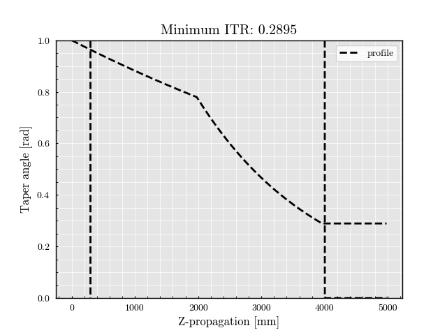

Note
Go to the end to download the full example code
Non-symmetric coupler z-profile#
Importing the script dependencies
from SuPyMode.workflow import AlphaProfile
profile = AlphaProfile(symmetric=False, add_end_of_taper_section=True)
Adding a first taper segment with large initial heating length (i.e. slow reduction)
profile.add_taper_segment(
alpha=0,
initial_heating_length=8e-3,
stretching_length=0.2e-3 * 20
)
Adding a first taper segment with small initial heating length (i.e. steep reduction)
profile.add_taper_segment(
alpha=0,
initial_heating_length=2e-3,
stretching_length=0.2e-3 * 20
)
profile.initialize()
profile.plot()
# -

/opt/hostedtoolcache/Python/3.11.9/x64/lib/python3.11/site-packages/SuPyMode/profiles.py:650: UserWarning: No artists with labels found to put in legend. Note that artists whose label start with an underscore are ignored when legend() is called with no argument.
ax.legend()
Total running time of the script: (0 minutes 0.931 seconds)